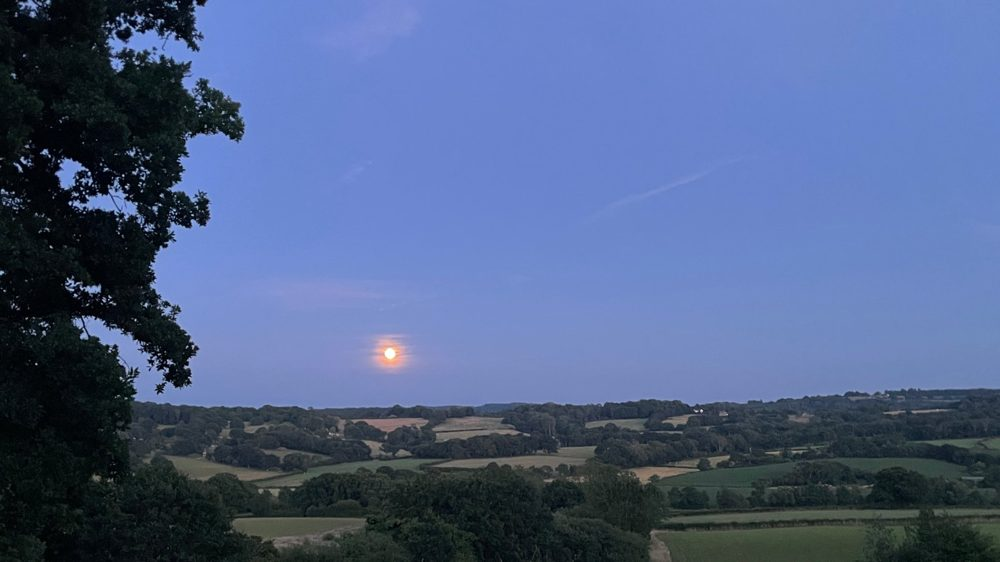

Services & events
We follow a monthly cycle of services across all three churches. Families and children are welcome at any of them.
This Sunday
At festivals and special services this can change, so please check our news and the calendar below.
Weekly news on WhatsApp
Join our WhatsApp community to get each week's services and events straight to your phone.
Our full monthly patternWhich services happen on the 1st, 2nd, 3rd, 4th and 5th Sundays of the month.
1st Sunday
- 9.30amBCP Holy Communion
Etchingham - 10.30amParish Communion
St Bartholomew's, Burwash - 10.30amMorning Praise
St Philip's, Burwash Weald - 4.30pmBCP Evensong
St Bartholomew's, Burwash
2nd Sunday
- 9.30amMorning Prayer
St Bartholomew's, Burwash - 10.30amBenefice Communion, a traditional service with hymns and Sunday School, for all three parishes
St Philip's or Etchingham - 4.30pmPraise@thePavilion (Burwash Common Pavilion) or Candlelit Compline (Etchingham), in alternate months
3rd Sunday
- 9.30amBCP Holy Communion (said)
St Bartholomew's, Burwash - 10.30amParish Communion
Etchingham - 10.30amParish Communion
St Philip's, Burwash Weald - 4.30pmEvening Prayer
St Bartholomew's, Burwash
4th Sunday
- 9.30amMatins
Etchingham - 10.30amBenefice Family Communion with Sunday School, for all three parishes
St Bartholomew's, Burwash - 4.30pmEvening Prayer
St Philip's, Burwash Weald
5th Sunday
- 9.15amSung Matins
St Bartholomew's, Burwash - 10.30amFamily Communion
Etchingham - 10.30amFamily Communion
St Philip's, Burwash Weald
During the week
Worship
- Wednesday 3.30–4.30pm
- Wednesday Club, messy church for primary-age children, St Bartholomew's (usually the 4th Wednesday, term time only)
- Thursday 10am
- Holy Communion, St Bartholomew's
Groups
- Monday 10am–12
- 3Cs: Coffee, Cake & Chat, St Bartholomew's
- Monday 11am
- Toddler group, Parker Hall, Etchingham
- Tuesday 8.30am
- Drop in, St Bartholomew's (term time only)
- Tuesday 10am
- Toddler group, Swan Meadow Pavilion, Burwash
- Thursday 10.30am
- Toddler group, Burwash Common Pavilion
Toddler groups are sometimes cancelled, so please check the calendar or our Facebook page before you come.
What to expect
Families and children are very welcome at all our services.
Family Communion & Sunday School
4th Sunday, 10.30am, St Bartholomew's, Burwash
Our main benefice service of the month, with all three parishes together. It's a relaxed, all-age Communion with Sunday School for children.
Praise@thePavilion
2nd Sunday, 4.30pm (alternate months), Burwash Common Pavilion
An informal service of worship songs, prayer and a short talk, held in the pavilion rather than a church. It's ideal for families and anyone who'd like to try church somewhere less formal.
Traditional service with hymns
2nd Sunday, 10.30am, St Philip's or Etchingham
A benefice Communion with traditional hymns and Sunday School, for all three parishes together. It alternates between St Philip's and Etchingham.
BCP Evensong
1st Sunday, 4.30pm, St Bartholomew's, Burwash
The beautiful evening service from the Book of Common Prayer, with the choir. It's sung, reflective and timeless.
Spoken Communion
3rd Sunday, 9.30am, St Bartholomew's, Burwash
A quiet, said service of Holy Communion from the Book of Common Prayer, with no music. It's a peaceful, unhurried start to Sunday.

Candlelit Compline
2nd Sunday, 4.30pm (alternate months), Etchingham
The ancient service of night prayer, sung by candlelight. It's still, reflective and a lovely way to end the weekend.
Dates do change from time to time, so check the calendar before you come.
Calendar
The calendar below is updated with every service and event. Tap an entry for details.
If the calendar doesn't load, open it in Google Calendar.